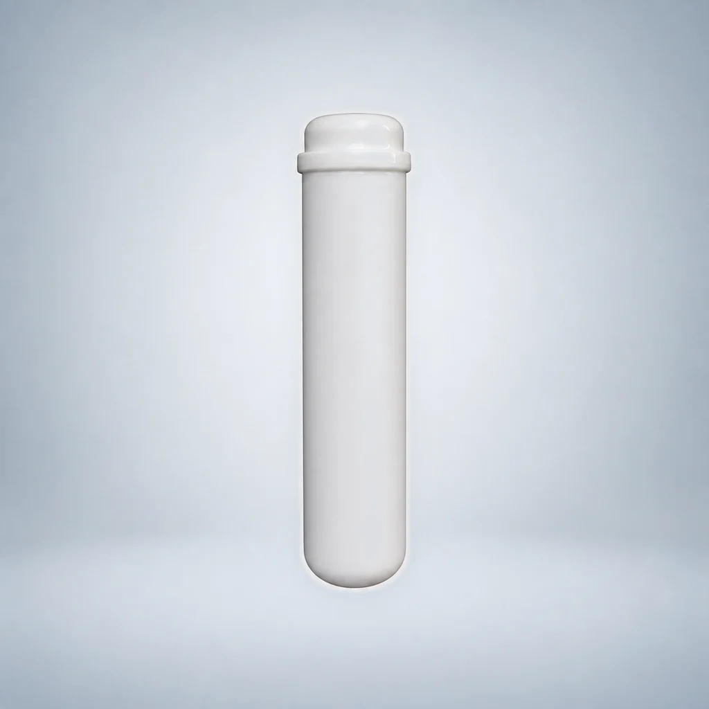
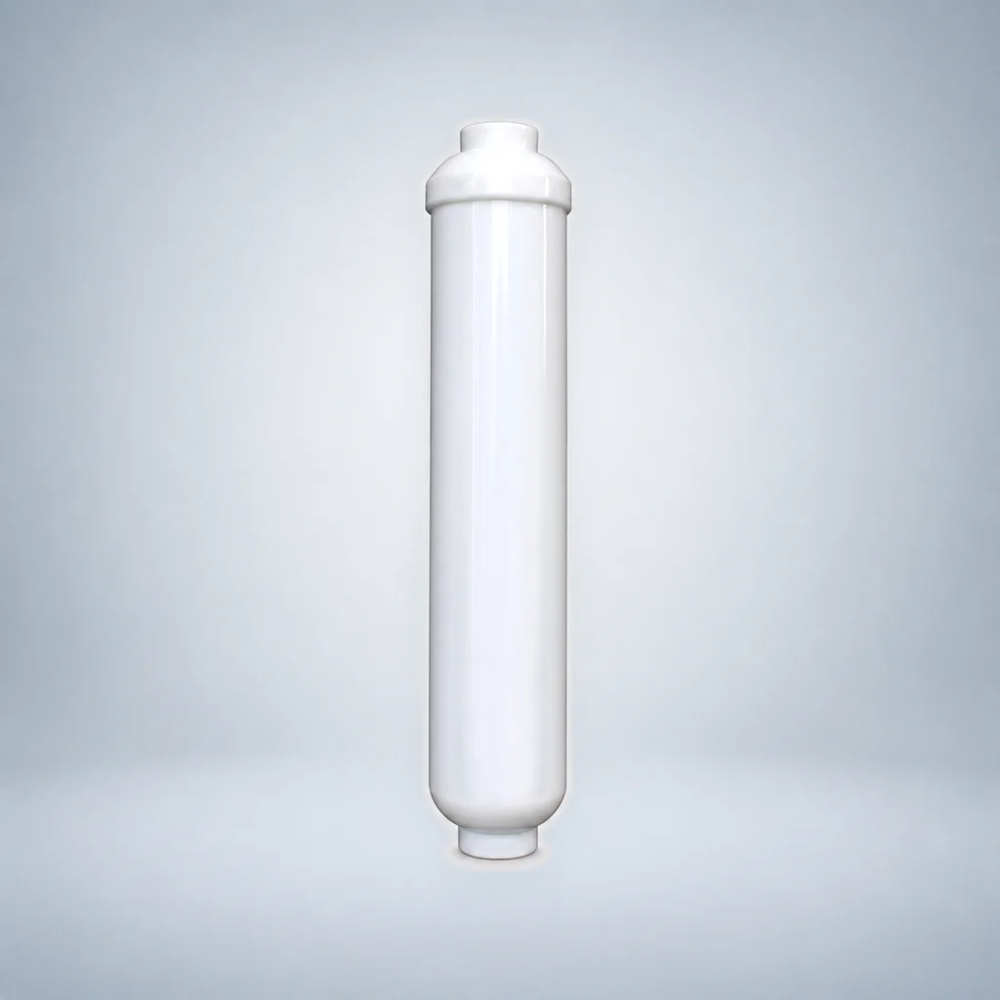
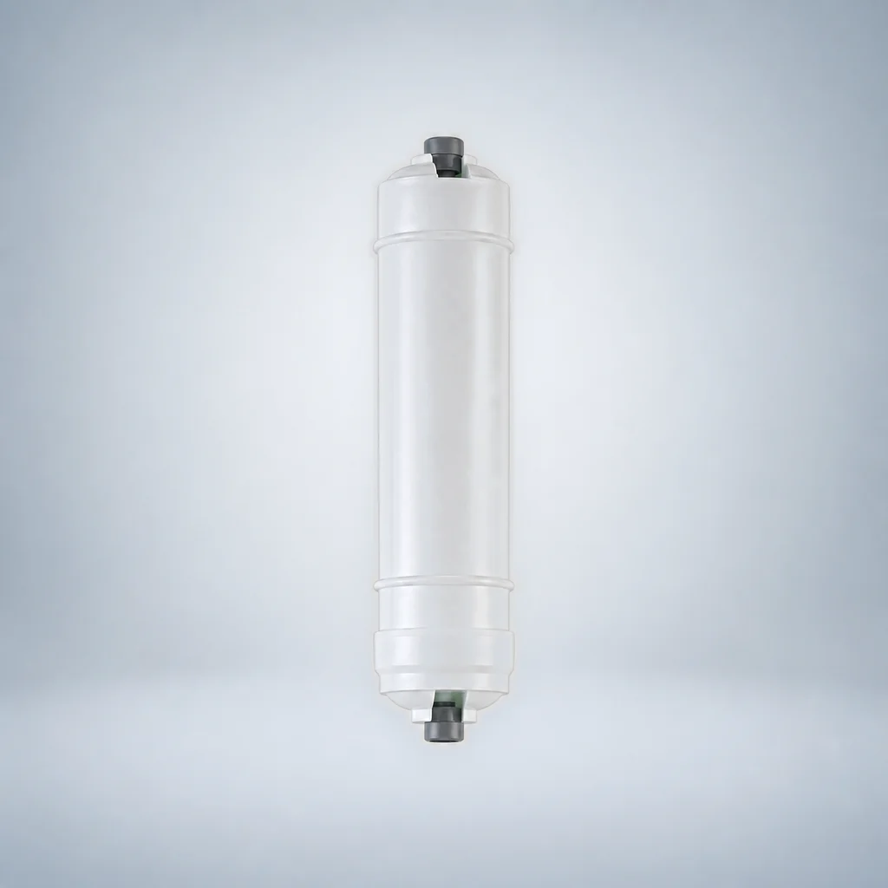
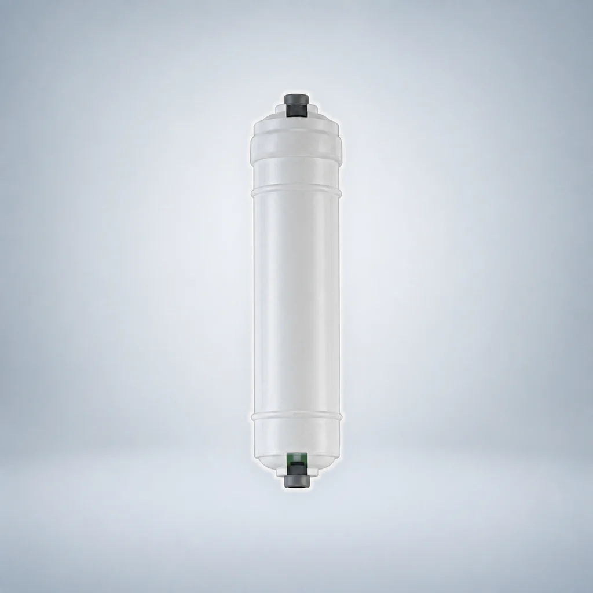
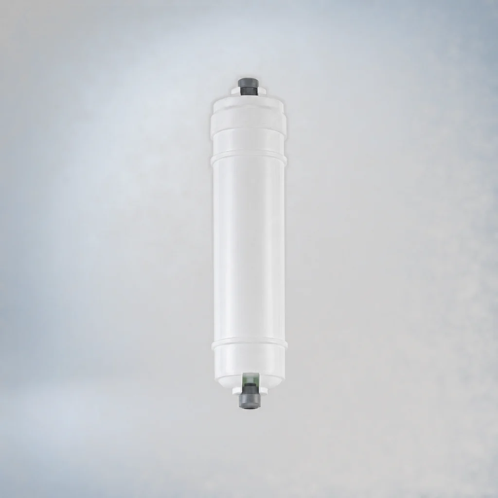

Female-Threaded CTO Carbon Block Filter Cartridge
- Format
- Female-threaded inline cartridge
- Filter media
- Carbon block (CTO)
Use this guide to compare connection-specific replacement cartridges. Quick-connect and female-threaded formats are listed separately, and coconut-shell carbon is identified by UDF granular, CTO block or T33 post-carbon construction rather than treated as one interchangeable product.
Compare the listed models and open a detail page. Model records are counted separately from configurable dimensions; suitability must be confirmed for your project.















Choose the requirements you already know. A configuration with an unstated source specification is marked for confirmation instead of being treated as an exact match.
Select up to three configurations. You can copy a structured RFQ summary or continue to the inquiry form with the verified IDs and filters prefilled.
Scope: This tool narrows the reviewed OEM configuration list. Final connection, compatibility, dimensions and project requirements must still be confirmed before quotation.